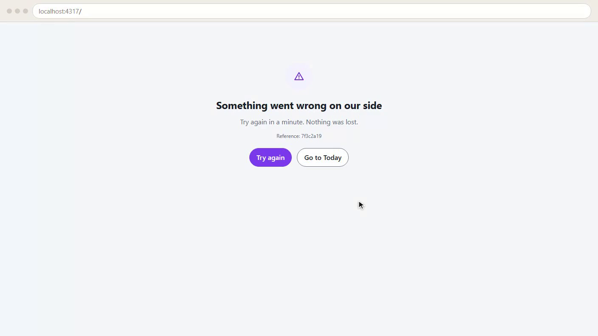
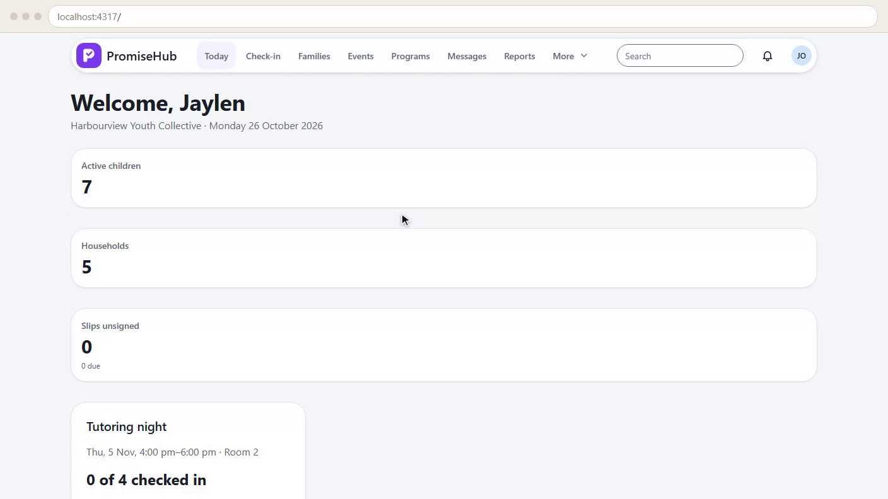
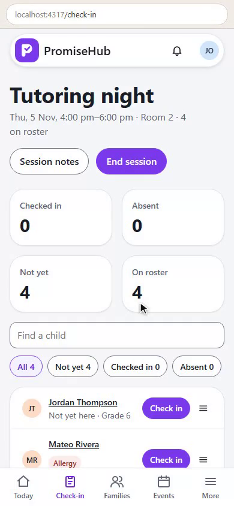
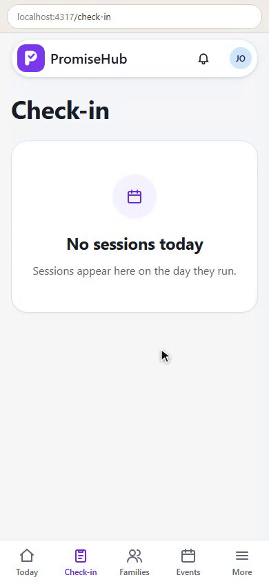
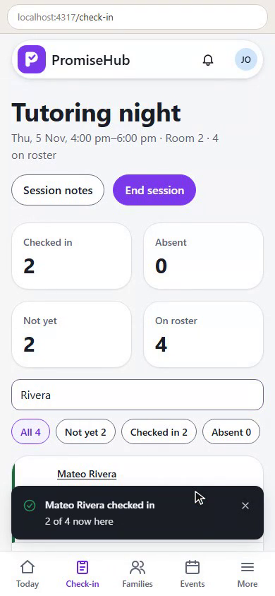

PromiseHub · Video 48
Operational readiness
See trouble first, stay quick
See trouble first, stay quick
Try again recovers.





| Alert | When |
|---|---|
| Error rate | Over 1% of at least 20 requests, 5 minutes |
| Queue age | A message waiting over 10 minutes, per organization |
| Repeat | Once, again only after it clears |
Rows update at once.
| Measure | Budget |
|---|---|
| First paint, cold | Under 1.5 s |
| Interactive | Under 2.5 s |
| Check-in row | Under 300 ms |
| Search keystroke | Under 200 ms |
| Case | Answer |
|---|---|
| Too few requests | No alert |
| Check-ins, server p95 | Under 1 s |
| Two organizations at once | p95 under 500 ms |
Next: backups and jobs